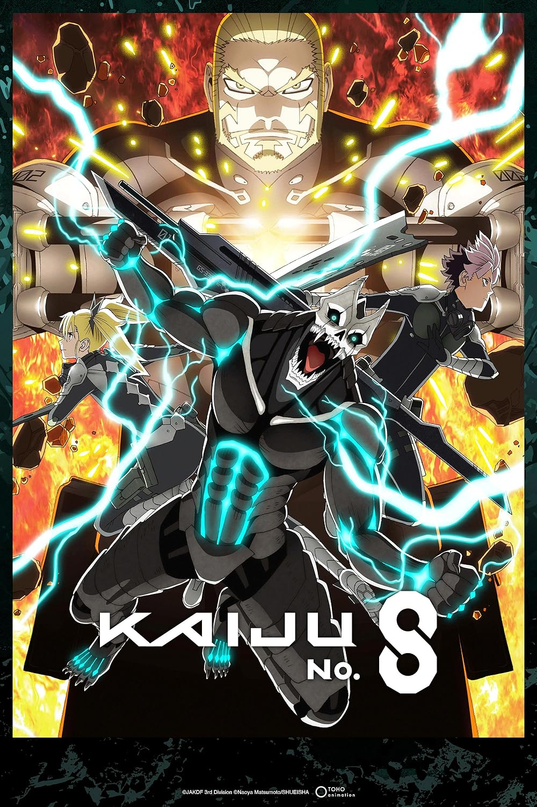
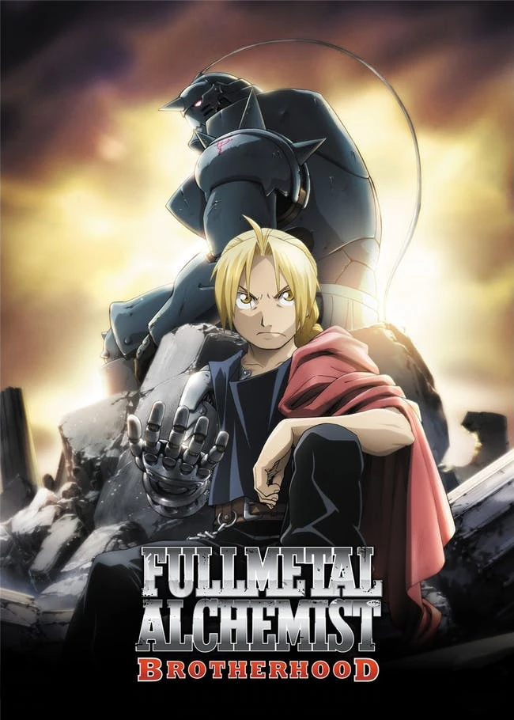

Kaiju No.8
Em um mundo distópico atormentado por monstros chamados kaijus, Kafka Hibino é atingido por um parasita kaiju e ganha a habilidade de se transformar em um kaiju.
Assistir

Fullmetal Alchemist
Para recuperar seus corpos, os irmãos Edward e Alfonse embarcam em uma jornada pelo mundo, buscando a Pedra Filosofal, um artefato poderoso capaz de amplificar seus poderes alquímicos.
Assistir
Frieren e a Jornada para o Além
Frieren, uma maga élfica que participou da jornada para derrotar o Rei Demônio. Após a vitória, Frieren retorna à sua rotina, mas, devido à sua longevidade, vê todos seus companheiros envelhecerem.
Assistir